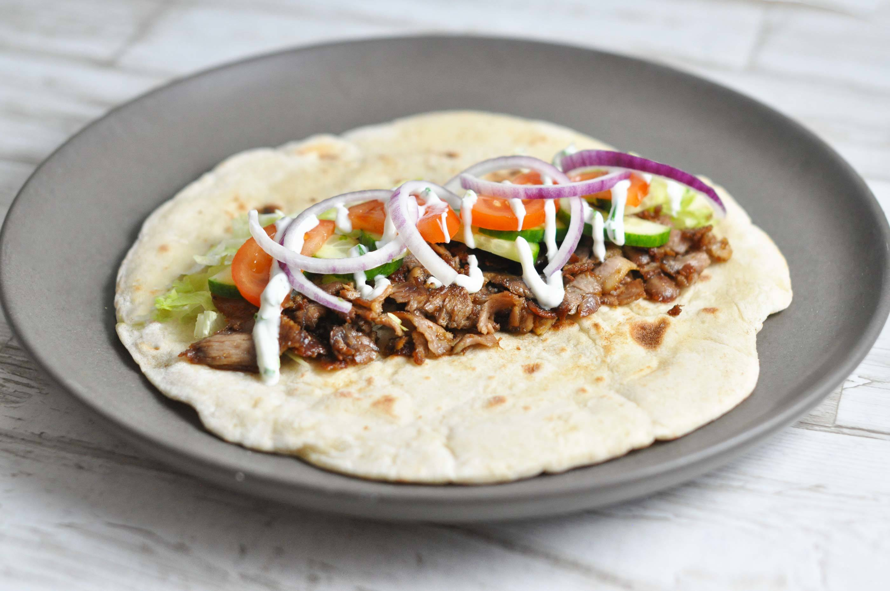

For the shawarma: Whisk together the oil, cumin, paprika, turmeric, allspice, chili powder, cinnamon, garlic, lemon zest and juice and 2 teaspoons salt in a container until combined. Add the chicken, cover and marinate, refrigerated, for 12 to 14 hours.
For the tomato-cucumber relish: Mix together the oil, vinegar, tomatoes, cucumbers, lemon juice, onion, parsley and some salt and pepper in a bowl.
For the tahini sauce: In a medium bowl, combine the tahini, oil, lemon juice and 1/4 cup water. Season with salt.
Prepare a grill for medium heat and oil the grill grates.
Remove the chicken from the marinade, sprinkle with salt and place on the hot grill. Grill skin-side down until the skin starts to brown and crisp, 4 to 6 minutes. Flip and grill the other side for another 4 to 6 minutes. Flip again and grill until the skin is super crispy and the internal temperature reaches 165 degrees F, about 5 minutes more. Let the chicken rest for 5 minutes, then slice into 1/4-inch pieces.
For the wrap build: First, spread tahini sauce on the tortillas, then top with shredded romaine, then the relish, then the chopped chicken. Add some pickled peppers, roll up tight and eat!